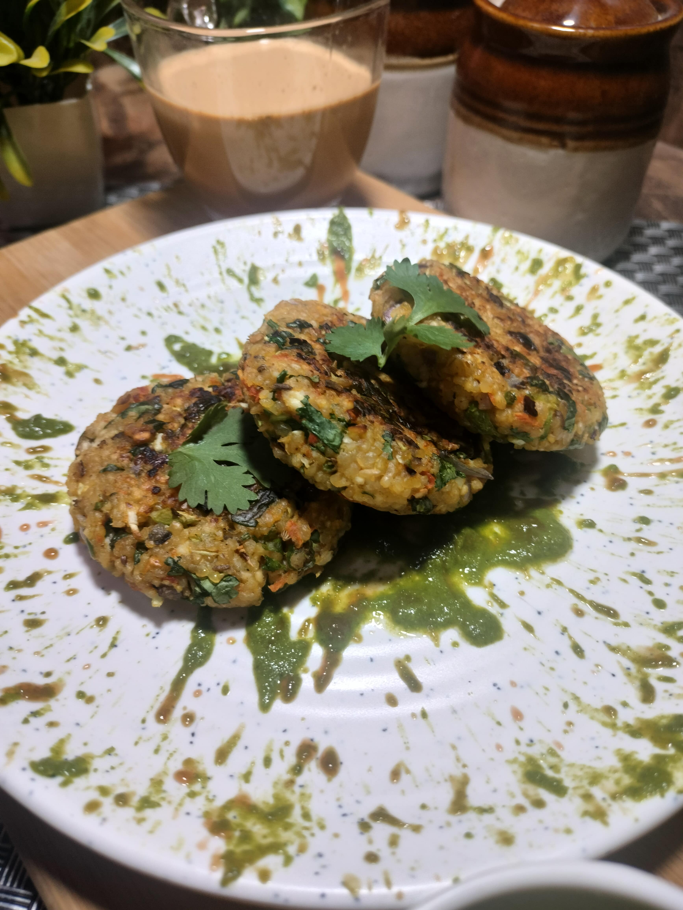

Dalia Cutlet
A tasty, fried dish, made out of a very boring meal.

Ingredients
- 1 cup dalia
- water
- coriander leaves
- salt as per taste
- 1/2 tsp red chilli flakes/red chilli powder
- 1/4 tsp cumin seeds
- 1/4 tsp garam masala
- 1/2 tsp chaat masala or dry mango powder(amchur powder)
- some green capsicum
- 2 tbsp chopped cabbage
- 2 tbsp grated carrot
- 2 chopped green chilli/as per taste
- 1 tbsp corn flour/roasted gram flour(besan)
- 1/2 cup Paneer (grated)
- 1 tbsp oil for shallow fry
Steps
- In a bowl soak 1 cup daliya for 30 min.
- Take a big bowl add soaked daliya, grated paneer, chopped onion, chopped capsicum, chopped cabbage, grated carrot, grated ginger, chopped coriander leaves, chopped green chilli, salt, garam masala, chat masala, chilli flakes, cumin seeds, turmeric powder, seasme seeds, roasted besan mix well and shape the Cutlets.
- Shallow fry or Deep fry according to your taste serve with green chutney
Back to main page